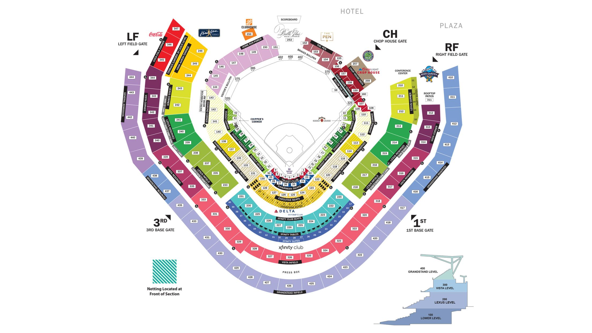

Truist Park Information
Truist Park blends classic charm, modern features, and southern hospitality to deliver a one-of-a-kind experience. Its 41,000-seat design ensures great views from every spot.
Download the MLB Ballpark App
The MLB Ballpark app is your mobile companion when visiting your favorite Major League Baseball ballparks. The official MLB Ballpark application perfectly complements and personalizes your trip with digital ticketing functionality, mobile check-in, special offers, rewards and exclusive content.
Learn More
How to Get to Truist Park
Truist Park is located 10 miles northwest of downtown Atlanta in the Cumberland neighborhood of Cobb County. The best way to get to Truist Park is to plan ahead, arrive early and consider all the transportation options available to you.
Truist Park
755 Battery Avenue Southeast
Atlanta, GA 30339
Parking Information
We strongly recommend pre-purchasing game day parking. Before you purchase, please review the parking map for lot details, including opening times specific to each lot.
Parking is based on availability and only available for purchase up until first pitch for any given day.
Pricing
Hours
Parking Map
Other Vehicles:
- Motorcycles: Guests riding motorcycles can purchase a parking permit in any of our Braves owned or managed lot.
- Bicycles: Guests arriving via bicycle can utilize our bicycle parking racks located in front of the Coca-Cola Roxy and outside of the Silver Deck on Circle 75 Parkway.
- Bus/Oversized Vehicles: Oversized vehicle parking permits are based on availability and must be purchased in advance. 15 Passenger vans ($50 per vehicle) and RV’s ($75 per vehicle) can park in Lot 29. Bus parking permits range from $50 to $75 per vehicle, depending on the size. Only those with an official Atlanta Braves bus parking permit and Dash Pass, provided by your group representative, will be allowed to park in our designated bus parking areas. Specific parking passes for all oversized vehicles must be secured in advance by contacting your group representative or by calling 404-577-9100.
- Electric Vehicle (EV) Charging Stations: The Atlanta Braves and The Battery Atlanta have partnered with Georgia Power and FLASH Parking to provide EV Charging Stations within the Battery Atlanta for Braves home games. Charging stations are subject to availability and available at Battery Red Deck, Battery Delta Deck (limited to parking permit holders on gamedays), Battery Orange Deck (limited to parking permit holders on gamedays), Battery Green Deck (limited to parking permit holders on gamedays), Battery Purple Deck, Battery Silver Deck (limited to parking permit holders on gamedays)
Public Transportation
Truist Park features a host of alternative transportation options designed to best suit the needs of any Braves fan.
CobbLinc:
- Around the Cumberland Area: Take the Circulator Blue or Circulator Green. Both travel directly to The Battery Atlanta & Truist Park and are free of charge.
- From the Marietta Park and Ride Lot: Take CobbLinc's Route 10 to the bus stop located at Cobb Parkway and Cumberland Parkway. From this stop, it will be about a 10-minute walk (approximately 0.5 miles) to the stadium. Walk south on Cobb Parkway and turn left onto Windy Ridge Parkway. Continue walking east along Windy Ridge Parkway to The Battery Atlanta and Truist Park.
- From MARTA's Arts Center: Take the CobbLinc Route 10 (note: does not run on Sundays) to the bus stop located at Cobb Parkway and Windy Ridge Parkway. It will be about a 7-minute walk (approximately 0.3 miles) to the stadium. Walk south on Cobb Parkway and turn left onto Windy Ridge Parkway. Continue walking along east Windy Ridge Parkway to The Battery Atlanta and Truist Park.
Hopper:
- The Hopper is an autonomous shuttle pilot program connecting Truist Park and the Battery Atlanta with the Cobb Galleria Centre. On select game days, the Cumberland Hopper will provide complimentary shuttle service via the I-285 Transit and Pedestrian Bridge.
-
For more information on the pilot program, as well as schedules and locations, please visit
https://cumberlandsweep.org/.
MARTA:
- You may board MARTA Bus 12 at the Midtown MARTA Station that travels to Cumberland Mall. Once you have arrived at the Cumberland Mall Transfer Center - please take the Cumberland Circular Shuttle (either blue or green route) to reach The Battery Atlanta & Truist Park.
MARTA Map
Rideshare
There is one rideshare zone that services Truist Park and The Battery Atlanta. The rideshare zone is located along Windy Ridge and allows easy pick-up and drop-off access.
Rideshare Pick Up/Drop Off: Either side of Windy Ridge Pkwy
Truist Park Seating Chart
Truist Park opened in 2017 and features a mix of premium clubs, outfield pavilions, and classic ballpark seating. Whether you're behind home plate or catching homers in right field, every seat is part of the action!
